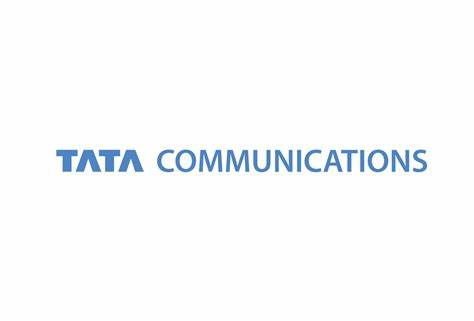

<!DOCTYPE html>
<html lang="en">

<head>
    <meta charset="UTF-8">
    <meta http-equiv="X-UA-Compatible" content="IE=edge">
    <meta name="viewport" content="width=device-width, initial-scale=1.0">
    <title>Document</title>
    <link rel="stylesheet" href="style.css">
</head>

<body>
    <div class="container">
        <div class="main-container">
            <div class="main">
                <div class="main-1">
                    
                    <h6>|</h6>
                    <h4>CIO.<span class="color">inc</span></h4>
                </div>
                <div class="main-2">
                    <div class="text">
                        <h4>Shangri-La, New Delhi</h4>
                        <h6>November 23, 2022</h6>
                    </div>
                    <div class="indiagate">
                        
                    </div>
                </div>
            </div>
            <div class="heading">
                <h3>ROUNDTABLE</h3>
                <h2>CLOUD FIRST TO CLOUD SMART:</h2>
                <h1>OPTIMIZING WITH BUSINESS LED
                    MIGRATION STRATEGIES
                </h1>
            </div>
            <div class="button">
                <button>

                    <h6>Register here</h6>
                    
                </button>
            </div>
        </div>
    </div>
    <div class="container-2">
        <div class="para-1">
            <h2>Dear Delegate,</h2>
            <p>A cloud-enabled resilient and agile IT system is today at the heart of business’
                transformation agenda. Underpinning this system is a complex integration and
                management of different IT infrastructures, network and security across cloud
                platforms.
            </p>
            <p>
                This requires a well-planned and thought-out cloud migration strategy that is
                aligned to the key business levers, including growth, agility, innovation as well
                as potential risks.
            </p>
            <p>
                The key lies in a unified cloud strategy – one that takes into account the
                business goals overarching the key pillars of security, network, compliance, and
                cloud economics. Thus, enabling smooth interconnections, better interoperability between applications
                and workload besides robust security and
                network connectivity.
            </p>
            <div class="para-2">
                <div>
                    <h2>Key discussion pointers:</h2>
                    <p>
                        • Pitfalls to avoid in your cloud migration journey
                    </p>
                    <p>• Effective cloud migration strategies to achieve the long-term cloud goals
                    </p>
                    <p>
                        • Transition from cloud first to cloud smart approach and best practices to
                        follow
                    </p>
                    <p>
                        • Delivering unified cloud experience in the hybrid multi-cloud estate through
                        a unified cloud strategy
                    </p>
                    <p>
                        Due to limited seats, the registrations are accepted on 'first come, first serve'
                        basis. Please reply back to confirm your participation.
                    </p>
                </div>
                <div class="img">
                    
                    
                </div>
            </div>
        </div>
        <hr>
        <hr>
        <button class="button-2">
            
            <h2>Register here
            </h2>
        </button>
        <div class="intro">
            <h3 class="gray">
                RSVP
            </h3>
            <h3>Rahul Neel Mani
            </h3>
            <p>Founding Director, Grey Head Media</p>
            <p>Vice President, Community Engagement & Editorial, ISMG</p>
        </div>
    </div>
    <div class="footer">
        <h4 class="gray">&copy; Information Security Media Group,</h4>
        <h4 class="gray">&copy; Unit No 201 & 202, 2nd Floor, B Wing, Kanakia Wall Street, Andheri (E)
        </h4>
        <h4 class="gray">
            Mumbai - 400 093
        </h4>
    </div>


</body>

</html>